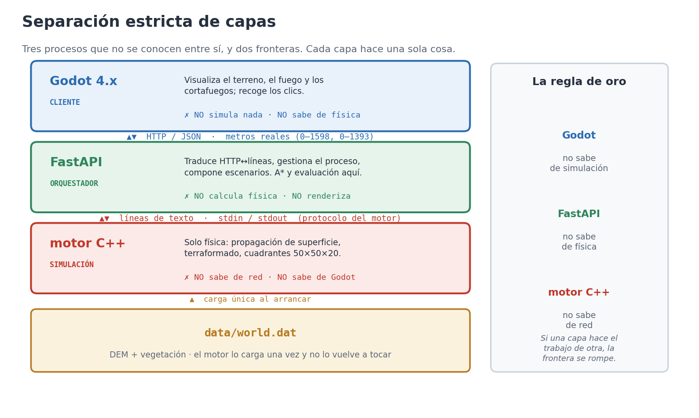
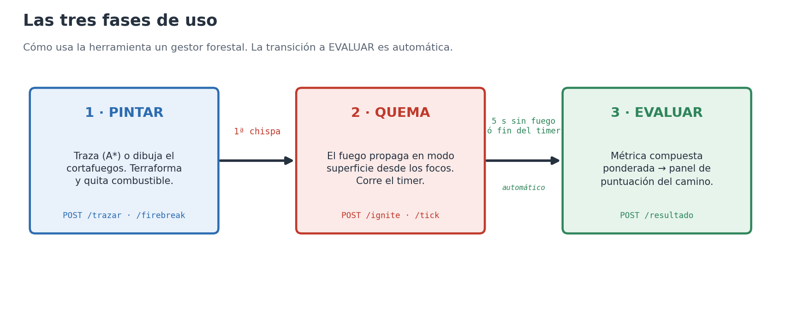
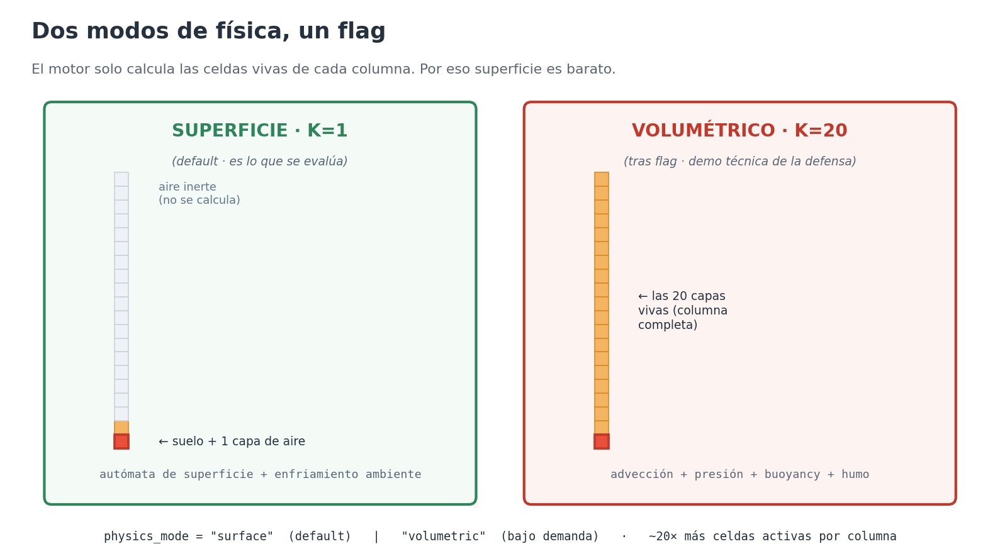

TFG · sistema · índice
El sistema de un vistazo
Cuatro esquemas exportables (PNG) pensados para las diapositivas y la memoria: el pipeline de datos, la separación de capas, las tres fases de uso y los dos modos de física. Generados con Python (matplotlib).
La página «La API como orquestador» cuenta la
arquitectura con HTML/CSS animado: perfecto para leerlo en pantalla, pero no se
puede pegar en unas diapositivas ni en la memoria en PDF. Estas cuatro figuras
cubren ese hueco — son imágenes estáticas, limpias y a alta resolución. Y, fieles
al espíritu del testing-lab, no inventan
nada: el tamaño del cuadrante, las capas del modo superficie y el número
de endpoints se leen del código real (engine/cuadrante.h,
engine/simulacion.h, api/main.py) al generar el diagrama,
así que no pueden desviarse del sistema.
1 · El pipeline: del dato bruto al producto

heightmap_16bit.png) y la imagen hiperespectral (vegetación) se
compilan con tools/build_world.py en data/world.dat, la
fuente de verdad. En vivo: el motor C++ carga ese mundo una sola
vez y conversa con la API (líneas stdin/stdout) y esta con Godot
(HTTP/JSON).
Lo que demuestra: el mundo es fijo y caro de construir, por eso se precompila; lo que cambia en cada sesión (el fuego, los cortafuegos) vive en el trío en ejecución. El pie de la figura lleva las magnitudes reales del terreno.
2 · Separación estricta de capas

Lo que demuestra: la testabilidad del sistema nace de aquí. Como cada capa está aislada, el testing-lab puede probar el motor sin arrancar la API, y la API sin Godot. El detalle (el lock, el protocolo de líneas, el ciclo de vida del proceso) está en «La API como orquestador».
3 · Las tres fases de uso

Lo que demuestra: el flujo del TFG de punta a punta —trazar → propagar → puntuar— condensado. Cada transición está disparada por un evento real, no por un clic manual: la evaluación es automática y reproducible, que es lo que la convierte en una medida y no en una anécdota.
4 · Dos modos de física, un flag

K=1, el default) eso es el suelo más una capa de
aire: el resto de la columna es inerte y ni se toca. En volumétrico
(K=20, tras el flag) se calculan las 20 capas — advección, presión,
buoyancy y humo. Misma geometría, ~20× más trabajo por columna.
Lo que demuestra: por qué el producto del TFG se evalúa en superficie (rápido y estable) y el motor de fluidos completo queda como demo técnica de la defensa, encendible con un flag sin borrar nada. El porqué del coste está en «Volumétrico (K=20) vs superficie (K=1)».
testing-lab/.venv/bin/python testing-lab/experiments/sistema.py escribe
los cuatro out/sistema_*.png. La cordura
(tests/test_sistema.py) verifica que los números del diagrama siguen
coincidiendo con el código: si alguien renombra una constante del motor o quita un
endpoint, el test lo caza.